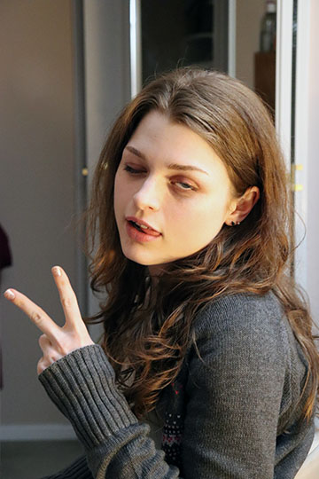

About me
My name is Nicola, born December 29th 2000, I am an aspiring illustrator and designer with a passion for cats, cool and/or cute things, halloween, and the colour pink. Born and raised in Ottawa ON, I spent much of my time in Kingston growing up, and Halifax after high school; Autumn is my favourite season all across Canada because of the colours of the leaves and it is not too cold yet. I am currently a first term student in the IMD program at Algonquin college.
There is no secret ingredient. To make something special, you just believe it’s special.- Mr.Ping from Kung Fu Panda (2008)
I like to make crafts and paint in my free time, I make my friends and family bead charms and figurines when I am not working or at school or doing schoolwork. Lately due to the winter weather, I like to stay at home, bake sugary treats and snacks, and put together puzzles or play games with my friends.
Hobbies
- Illustration
- Video Games
- Crafting
- Making Cupcakes
- Having a Good Time with my Pals